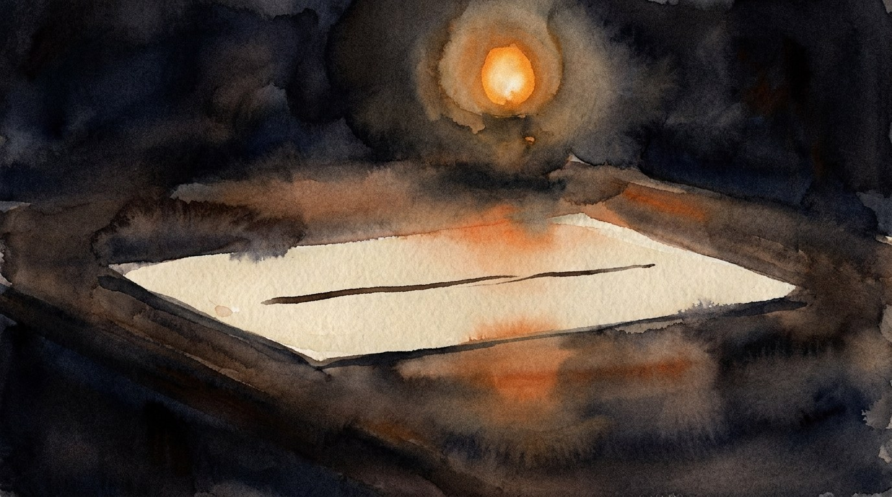
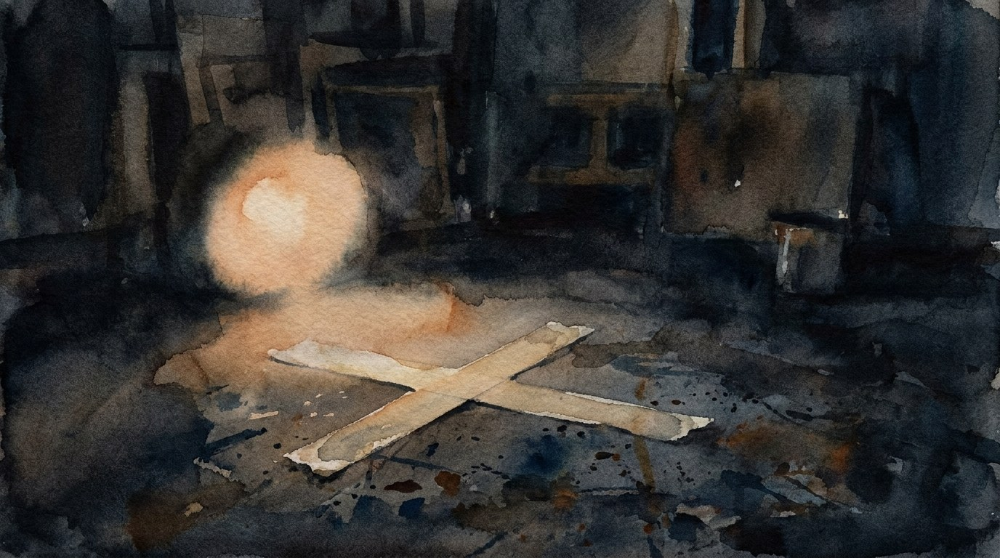
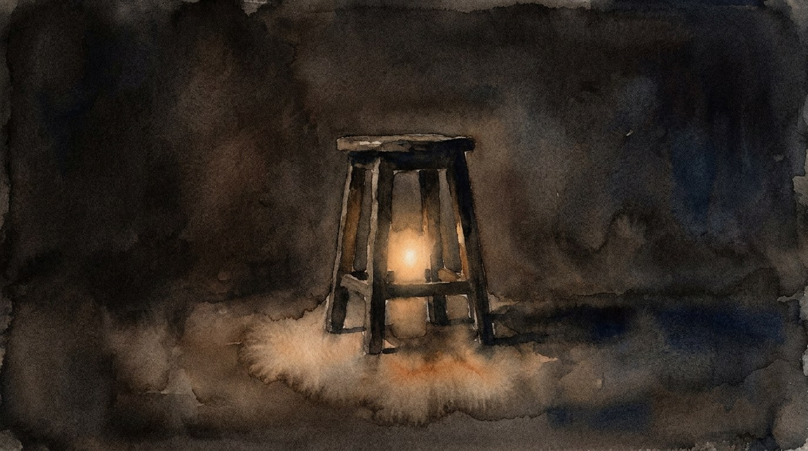
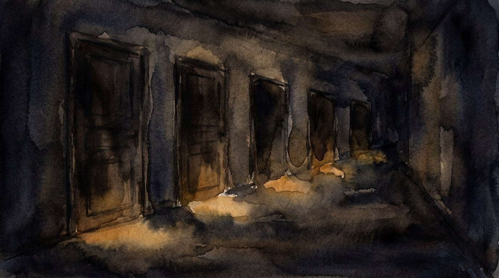
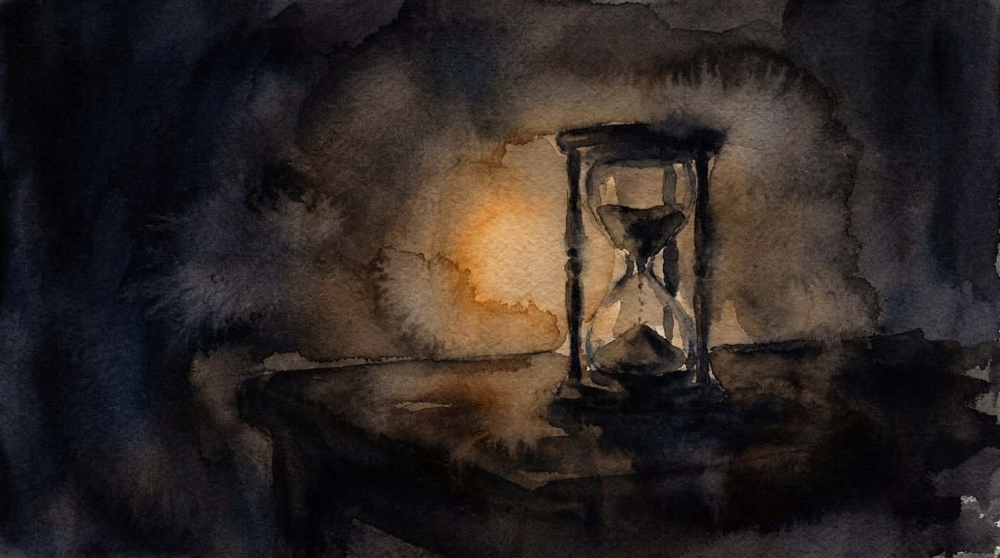
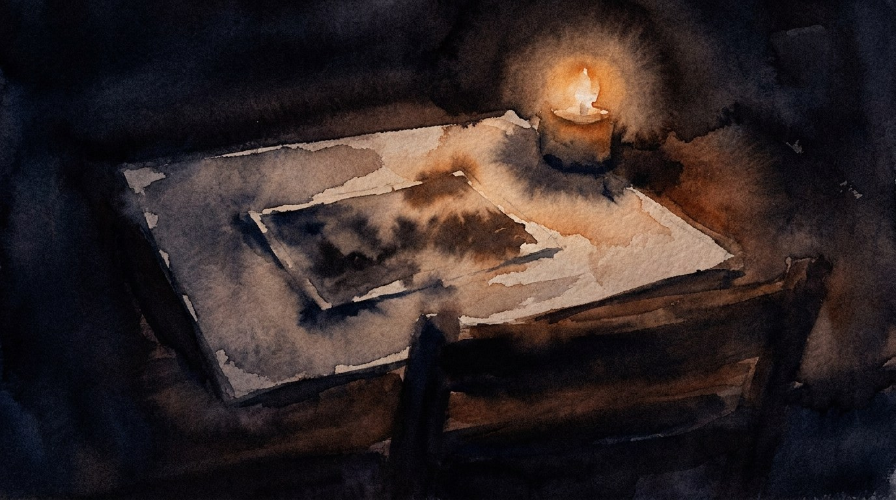
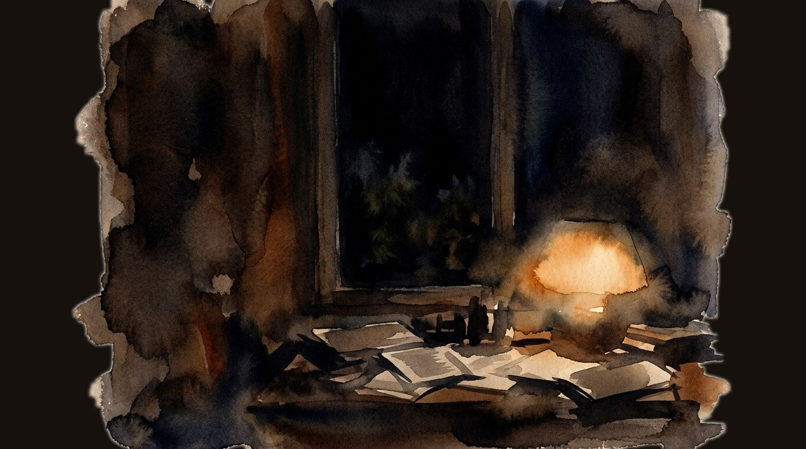
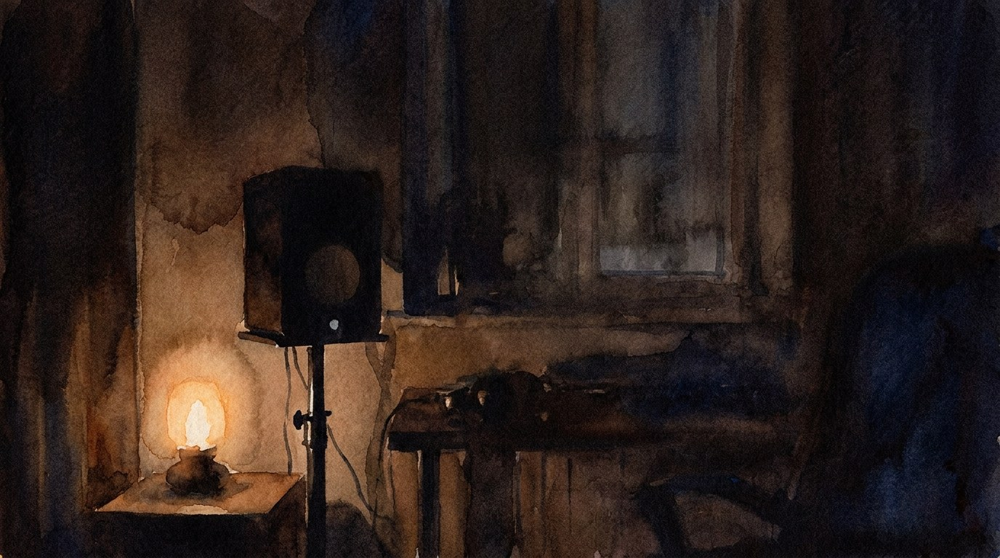
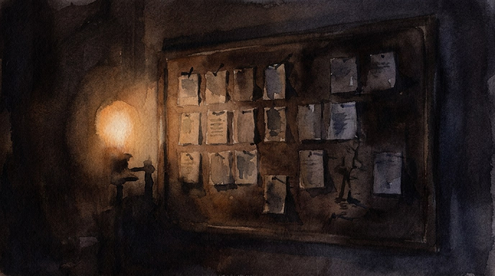
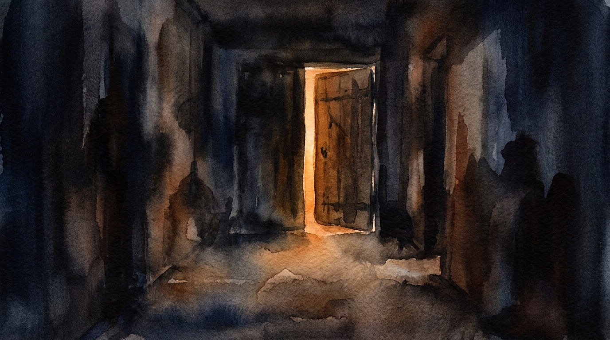

Mantra Field Books · No. 8
The rules this studio actually works by, each one followed by the production that taught it.
A principle with no scar is a slogan. Every chapter here is followed by the thing that went wrong first, because that is the only reason any of it is written down.
The craft book already exists: How to Create a Winning Film, roughly twenty thousand words on why a film wins, the well, the palette, the weave, the arc, the departments, composition, colour, and the twelve-stage workflow. It is the deep text and this book does not repeat it.
What you get here instead is the spine: the handful of principles that survive contact with an actual production, the material on directing a non-actor that exists nowhere else, and the full breakdown of The Brain Brake — the film that tested all of it.
Mantra Productions is small and works across continents. On The Brain Brake: a presenter and a producer in India, a cinematographer in Bengaluru, an animator in Zagreb, and a director editing at Nova TV between shifts. Nobody is in the same room. That constraint shaped everything, and most of these principles are answers to it.
Chapter one
The test that comes before anything is written.

Before a treatment, before a board, before anybody is asked for money: say the film in one sentence to a person who does not care. Watch their face. That is the whole test and it is free.
The Brain Brake's sentence, from the project's own record: a runner with nothing left produces an impossible sprint, a boy goes looking for where it came from, expects to find an empty tank and finds a full one, and a door that somebody closed on purpose.
Underneath it, the thesis in six words: the limit is a setting, not a wall.
Two things become impossible once the sentence exists. You cannot shoot a scene that does not serve it, because the moment you say the scene out loud next to the sentence, the mismatch is audible. And you cannot be talked into a scene by somebody enthusiastic, because the sentence answers on your behalf.
The thesis does more work still. The limit is a setting, not a wall is not a logline — it is a decision procedure. Every frame either demonstrates it, sets it up, or is cut. Chapter five is about what happened when that had to be applied forty-seven times in an afternoon.
Chapter two
Direction an actor can do, versus direction that is an adjective.

The single most common failure in directing is giving an instruction that cannot be performed. "Be more vulnerable." "Make it warmer." "More energy." These describe a result, not an action, and an actor receiving one has no move available except to strain toward an adjective.
A playable instruction names something a person can actually do.
| Not playable | Playable |
|---|---|
| Be more excited | You have just found the person responsible |
| Sound authoritative | You already know the answer and you are not going to give it yet |
| More warmth | Talk to one person. Choose them now and keep them all week. |
| Be surprised | Nobody else has noticed this. You are the only one who saw. |
| Give me more energy | You have just got up out of your chair because you could not sit still |
The right-hand column is taken from the actual per-line direction sheet for The Brain Brake. Every one of them describes a situation the performer is in, not a quality they should emit. Given the situation, the quality arrives on its own — and it arrives looking like a person rather than like acting.
Objective, obstacle, action. What does this person want in this moment, what is in the way, and what are they doing about it. If a direction cannot be expressed in those terms it is decoration, and it will make the take worse by giving the performer something to worry about.
Chapter three
Twenty-two rules for somebody who is not an actor.

Most of the people I put in front of a camera are not actors. They are scientists, musicians, teachers — people who know something and have to say it convincingly while a stranger points a lens at them.
The document below was written for Manan Periwal, who presents The Brain Brake, and it is now in its fifth version. It is the most useful thing this studio has produced, and it exists because the first version was not enough.
Look at what they have in common. Almost none of them is about performance. Numbers 6, 7, 8, 12 and 13 are about the body — hands, breath, shoulders, the fall of a sentence, the neck. Numbers 1, 4 and 19 are about time, and specifically about the non-actor's terror of silence. Numbers 16 and 21 are about permission.
That distribution is the finding. A non-actor's problem is almost never that they cannot act. It is that they are tense, rushing, and trying to add something. Every rule above removes rather than adds, and rule 22 says so outright.
Rule 14 is the one I would keep if I could keep only one. If a take feels wrong, watch it before you decide it was wrong. A performer's internal sense of a take is close to uncorrelated with how it reads, and the takes that feel like nothing are very often the ones that play.
Chapter four
Stanislavski to Chekhov, without the partisanship.

Actor training in the West runs through a small number of arguments, mostly conducted with unnecessary heat. A director does not need to enlist. A director needs to know which tool suits which performer and which problem.
For a non-actor, Meisner and Chekhov are the useful pair: put attention on the other person, and work from the outside in. Adler's imagination work extends it. Strasberg's affective memory is the one to leave alone unless you know exactly what you are doing and have somewhere to put what comes up — a director asking an untrained person to excavate their own grief for a two-minute film has confused ambition with authority.
Chapter five
Two minutes, hard, and what it did to the edit.

The Brain Brake was made for a competition with one non-negotiable rule: two minutes or under, measured on the YouTube clock, or it is not judged.
The film ran 2:47 before anybody checked.
Forty-seven seconds had to leave a film in which every scene had already been argued for. The current state, from the production record: fifty frames, 2,945 frames of animation, 1:57.80 at 25 fps, with 2.20 seconds of margin.
Written into the project's own documents is a rule that reads like panic and is actually discipline: the running time can never grow. Every addition after that point had to be paid for by a subtraction. When the producer's three lines were restored — at 4.4b, 4.8, and the 8.6-to-8.8 triplet — three other frames came out to fund them: 7.6, 8.5 and 6.3.
Scene seven is now wordless. It did not begin that way. It became wordless because it had to be paid for, and losing the words turned out to make it better — which is the honest and slightly humiliating lesson of the whole exercise.
A hard external limit is worth more than good taste, because taste negotiates and a limit does not. Given 2:47 of material and a 2:00 ceiling, you find out what the film is actually about within an afternoon. Given no ceiling, you can protect a favourite scene for years.
If you are working without a competition deadline, invent the ceiling and treat it as external. The trick is only useful if you genuinely cannot argue with it.
Chapter six
Photograph what is true, draw what is thought.

The Brain Brake mixes drawn animation and live action. Films that mix them usually look like two films glued together, and the reason is almost always that nobody wrote down which material goes where.
One line settles it: photograph what is true, draw what is thought.
| Layer | What belongs in it | How it looks |
|---|---|---|
| Drawn | Everything imagined — the factory, the tanks, Coach Brain, the lever | Graphite pencil on warm cream paper |
| Live action | Manan, the evidence, and the person who came to look | Photographed against grey, cut out, placed into the drawing, casting a real shadow onto the paper |
| The booth | The film being made — he records the narration | Dark room, one warm backlight, silhouette; the page is the only lit thing |
When something is ambiguous, the law answers: did it happen, or did somebody imagine it? No meeting required, no taste required, and the same answer arrives whether it is the director deciding at midnight in Zagreb or the animator deciding at nine in the morning.
A photographed figure dropped onto a drawing reads as a collage. The same figure casting a shadow onto the paper reads as an object resting on it. The shadow is doing the entire job of persuasion, and it costs almost nothing — which is a fair description of most of the effects that actually work.
Chapter seven
One device, used the same way every time.
In The Brain Brake the presenter carries a magnifying glass. Wherever he holds it up at the end of a shot, that lens is the door to the next scene. Push in until the circle fills the frame, the new scene appears inside it already bent, and it straightens as we come out.
The specification is exact, because a grammar that varies is not a grammar: twenty frames, barrel distortion easing from 0.55 to 0, chromatic aberration on the circle edge, and the paper grain held over both scenes throughout so it never blinks off. It happens at 1.6, into the lecture room, and at 2.3, into the factory.
An audience learns a rule in one use and confirms it on the second. From then on the device carries meaning without explanation: the glass means we are about to look closer, and by the second occurrence they know it before it happens.
Vary the numbers and none of that accumulates. It becomes a nice transition, twice, and the audience learns nothing. This is why the parameters live in the animation guide rather than in somebody's head — an animator in Zagreb and a director on a phone have to produce the identical move.
One device, specified numerically, used identically. Two uses establish it; a third confirms it. And never introduce a new device in the last third — the audience has stopped learning by then and will read it as a mistake.
Chapter eight
Send the reason, never only the frame.

Mantra works distributed. On this film: the presenter and producer in India, the cinematographer in Bengaluru, the animator in Zagreb, the director editing between television shifts. The whole method is an answer to that.
A frame sent alone gets executed literally, and a literal execution of an under-specified frame is always slightly wrong. A frame sent with what it is for gets executed intelligently, and the collaborator can solve problems you did not anticipate — which is the entire reason you hired somebody good.
A shooting document arranged in story order is a document that makes the crew relight eleven times. Arranged by setup — everything that shares a camera position and a lighting state, grouped — it makes the day possible. The story order is for you; the setup order is for them.
Animation is expensive per second in a way that video is not. Every frame changed after animation begins is paid for twice. This is the discipline that the two-minute constraint in chapter five made unavoidable, and it is the reason the frame budget lives in a JSON file rather than in a conversation.
Tell collaborators which parts are load-bearing and which are approximate. Given that, a good animator protects what matters and improvises where it does not. Without it, they treat everything as equally fixed, which produces a film that is uniformly competent and nowhere alive.
On the day, everybody's attention goes to the big moments. The takes that end up in the film are frequently the small ones, and they are the ones a rushed schedule loses first. Chapter three, rule 14 — the take that felt like nothing.
Chapter nine
And it is two other books.

A film is only half picture, and the half that is not picture routinely receives a tenth of the attention. This chapter is short because the material exists elsewhere in this series, properly.
Three things belong here rather than there, because they are directorial rather than technical.
Silence is a department. It is not the absence of the sound work; it is a decision with the same weight as a music cue, and it requires the same defending. Scene seven of The Brain Brake is wordless, and chapter five explains that it became wordless for budgetary reasons and stayed wordless because it was better.
Continuity of tone is the hidden work. An audience will forgive an imperfect effect. It will not forgive a room that changes size between two shots that are supposed to be in the same place.
Order of work. Dialogue first, always. Then the effects that carry story. Then atmospheres. Music last, because music will paper over problems you should have solved, and a film mixed music-first is a film whose dialogue you will fight for the rest of the schedule.
Chapter ten
Nine scenes, fifty frames, 1:57.80, and 2.20 seconds of margin.

The production this book was written out of. Facts below come from the project's own records; anything I could not confirm there is flagged at the end.
A runner with nothing left produces an impossible sprint. A boy goes looking for where it came from, expects to find an empty tank, and finds a full one — and a door that somebody closed on purpose. The limit is a setting, not a wall.
| Item | State |
|---|---|
| Format | Version four, the comic strip |
| Scenes | Nine — a third scene, THE ARRIVAL, was added so the presenter enters at human scale rather than on the end of the reversal |
| Frames | 50 |
| Animation frames | 2,945 at 25 fps |
| Running time | 1:57.80 against a hard 2:00 |
| Margin | 2.20 seconds |
| Script | Version three, locked, producer-approved |
| Shoot | Tuesday 18 August 2026, Bengaluru |
Every one of those four is the same move: a thing was tried, it failed against a stated criterion, and the failure was written down with its reason rather than quietly replaced. The nine rejected marks are in the repository. The retired term "hero image" is in the record with the sentence that killed it. That habit is worth more than any of the individual decisions.
Chapter eleven
One file, one truth, read at the start of every session.
The most consequential thing on this production was not a camera decision. It was a text file.
The project runs a document called STATE, described in its own opening as the shared brain: one file, one truth, read at the start of every session and written at the end of it. Around it sit a takeover document that acts as the front door, versioned handovers, and separate files for animation, voices, elements and correspondence.
Rule three is the one I would press on anybody. The gap between noticing a rule and recording it is where productions lose their consistency, and "within three scenes" is not a figure of speech — it is roughly how long it takes.
A distributed production has no corridor. There is no moment where two people pass each other and one says the thing that prevents a week of wasted work. The written record is the corridor, and if it does not exist the production runs on whoever happens to remember correctly.
The same discipline governs the rest of this studio's work and is set out in the Mantra Manifest. It applies identically to a film and to a piece of software, which is the subject of the next field book.
Chapter twelve
Written before the result is known, on purpose.

This chapter is written before The Brain Brake has been judged. That is deliberate: a post-mortem written after a result is an explanation of the result, and it is worth much less.
Four of those five are the same failure: a rule that eventually got written down existed informally for weeks first. The cost is never the writing. The cost is every decision made in the interval, each of which has to be revisited once the rule finally exists.
Write the rule the first time you notice it. It takes one line and it is the cheapest thing in filmmaking.
Apparatus
The repositories this was written from.
Unlike the other field books in this series, this one is written almost entirely from primary material — Mantra Productions' own working documents, read directly from the repositories on 20 August 2026.
BRAIN_BRAKE — the production repository. STATE.md for the film in one sentence, the protocol quoted in chapter eleven, the nine-scene change and the retirement of the term hero image. HANDOVER_V7.md for the frame count, running time, margin, shoot date, the three layers and the magnifying-glass specification. 21-manan-training-book-v5.py for the twenty-two rules in chapter three and the per-line directions in chapter two.BRAIN_FREEDOM — the split-screen studio application built for this production.Chapter four summarises Stanislavski, Meisner, Adler, Strasberg and Michael Chekhov from the general literature of actor training. It is a director's working summary, not a scholarly account, and each of those traditions has a large body of writing behind it that a serious student should go to directly.
House rule
Stated as plainly as what I could.
STATE.md or HANDOVER_V7.md. It should be checked before this book is circulated.HANDOVER_V7.md is dated 16 August 2026 and describes itself as superseded in places; STATE.md was last written 9 August. The figures in chapter ten — 50 frames, 1:57.80, 2.20 seconds of margin — were current at the shoot date and may already have changed. TAKEOVER.md is the project's own newest source of truth and wins over anything here.